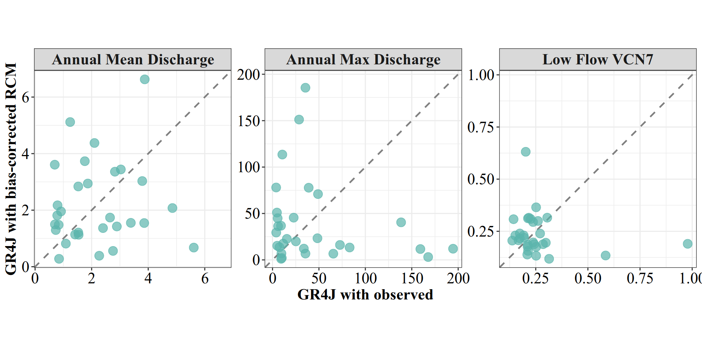
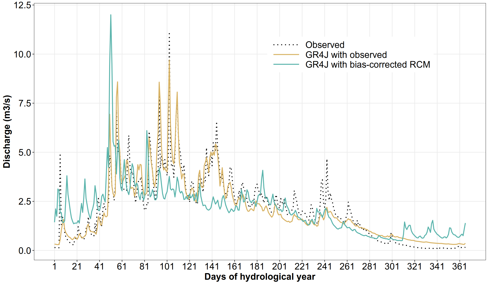
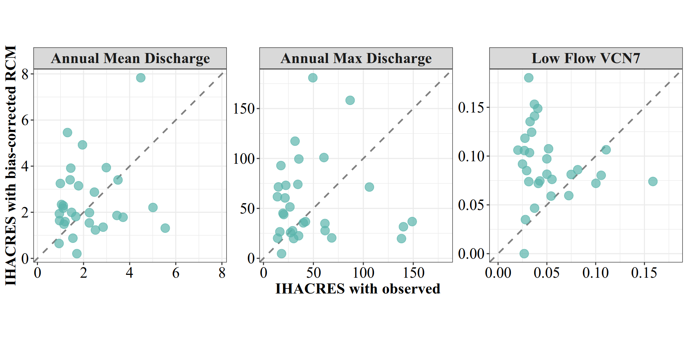
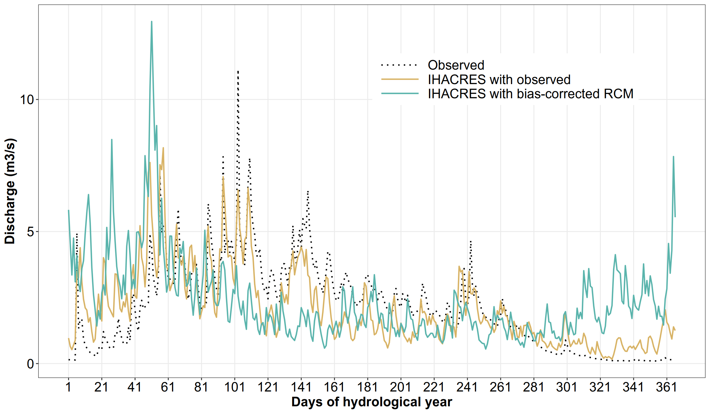

library(zoo)
library(airGR)
library(hydromad)
library(dplyr)
library(tidyr)
library(lubridate)
library(ggplot2)
library(patchwork)Hydrological simulation
1 Load necessary libraries
2 Load preprocessed observational and bias corrected data
hist_obs = readRDS("output_preprocessed/processed_obsdata_lez.rds")
str(hist_obs)'data.frame': 10592 obs. of 5 variables:
$ Date: Date, format: "1977-01-01" "1977-01-02" ...
$ P : num 2.85 0 0 1.7 6.4 5.95 0 0 0 0 ...
$ T : num 6.84 4.6 3.34 2.95 3.98 ...
$ PET : num 0.75 0.9 1.55 2.25 1 0.7 1.75 2.1 1.2 0.6 ...
$ Q : num 14.56 11.65 7.77 5.82 4.85 ...biascorr_climdata = readRDS("output_biascorrection/biascorrected_climdata.rds")
str(biascorr_climdata)List of 3
$ hist :'data.frame': 10592 obs. of 5 variables:
..$ Date : Date[1:10592], format: "1977-01-01" "1977-01-02" ...
..$ PR : num [1:10592] 0.00 0.00 0.00 0.00 2.19e-13 ...
..$ PET : num [1:10592] 0.639 0.682 0.695 0.648 0.735 ...
..$ PRadj : num [1:10592] 0.00127 0.00127 0.00127 0.00127 0.00138 ...
..$ PETadj: num [1:10592] 0.578 0.77 0.797 0.612 0.895 ...
$ rcp45:'data.frame': 10592 obs. of 5 variables:
..$ Date : Date[1:10592], format: "2070-01-01" "2070-01-02" ...
..$ PR : num [1:10592] 2.131081 0.587775 0.000654 0.065439 1.31717 ...
..$ PET : num [1:10592] 0.597 0.721 0.831 0.9 0.664 ...
..$ PRadj : num [1:10592] 0.1309 0.0236 0 0 0.0878 ...
..$ PETadj: num [1:10592] 0.427 0.815 1.061 1.179 0.627 ...
$ rcp85:'data.frame': 10592 obs. of 5 variables:
..$ Date : Date[1:10592], format: "2070-01-01" "2070-01-02" ...
..$ PR : num [1:10592] 2.79 2.079 0.208 0.147 2.787 ...
..$ PET : num [1:10592] 0.655 0.644 0.76 0.91 0.763 ...
..$ PRadj : num [1:10592] 0.311 0 0 0 0.311 ...
..$ PETadj: num [1:10592] 0.482 0.426 0.833 1.163 0.841 ...3 Validation of the bias correction using calibrated hydrological models over the historical period
In this section, we will run hydrological experiments or simulations using calibrated hydrological models driven by observed hydroclimatic data and bias-corrected GCMs outputs.
3.1 Validation with the GR4J model
We first load the optimized GR4J parameters derived in the GR4J model calibration section.
gr4j_param = readRDS("output_modelcalibration/fitGR4J_lez.rds")Before running the GR4J simulations, we define a helper function (run_gr4j_simulation(...)) that prepares all required input objects for the model using already calibrated parameters. This function streamlines the simulation workflow, avoids repeating the input preparation steps, and ensures consistency across all model runs.
Show the code
run_gr4j_simulation = function(data, Pvarname, PETvarname, Qobs, params) {
data = data[complete.cases(data[, c(Pvarname, PETvarname)]), ]
# Ensure Date format (POSIXt required by airGR) ---
data[["Date"]] = as.POSIXct(data[["Date"]])
# Create model inputs ---
InputsModel = CreateInputsModel(
FUN_MOD = RunModel_GR4J,
DatesR = data[["Date"]],
Precip = data[[Pvarname]],
PotEvap = data[[PETvarname]]
)
# Create run options (no warm-up) ---
RunOptions = CreateRunOptions(
FUN_MOD = RunModel_GR4J,
InputsModel = InputsModel,
IndPeriod_Run = seq_len(length(data[["Date"]]))
)
# Run GR4J simulation ---
OutputsModel = RunModel_GR4J(
InputsModel = InputsModel,
RunOptions = RunOptions,
Param = params
)
# Return simulation outputs ---
data.frame(
Date = data$Date,
Qobs = Qobs,
Qsim = OutputsModel$Qsim
)
}Reference simulation (Benchmark using station data)
Qobs_data = hist_obs$Q
gr4jsim_hist_obs = run_gr4j_simulation(
hist_obs, "P", "PET", Qobs_data, gr4j_param
)
str(gr4jsim_hist_obs)'data.frame': 10592 obs. of 3 variables:
$ Date: POSIXct, format: "1977-01-01" "1977-01-02" ...
$ Qobs: num 14.56 11.65 7.77 5.82 4.85 ...
$ Qsim: num 1.018 0.969 0.902 0.852 0.842 ...We will focus strictly on the validation of the bias-corrected data (the “Adjusted” version), (i.e., the PRadj and PETadj columns created by our CDF-t step).
hist_adj_climdata = biascorr_climdata[["hist"]]
gr4jsim_hist_adjclimdata = run_gr4j_simulation(
hist_adj_climdata, "PRadj", "PETadj", Qobs_data, gr4j_param
)We define the hydrological year starting on September 1st. Once the hydrological year defined, we will compute the following statistics for the observations and for each climate model simulation:
- Mean annual discharge:
- Annual Maximum
- Annual Minimum 7-day Discharge (VCN7)
- Mean daily hydrograph over the hydrological year
Below, we define two helper functions to compute these metrics:
Show the code
compute_hydro_indices = function(df, model_name, Q_col)
{
df %>%
mutate(
# Revert selected Q from mm to m3/s (assuming area is 178 km2)
# .data[[...]] allows us to reference the column dynamically
Q_val = (.data[[Q_col]] * 178) / 86.4,
Date = as.Date(Date),
# Define Water Year (Sept 1st)
WaterYear = ifelse(month(Date) >= 9, year(Date) + 1, year(Date))
) %>%
group_by(WaterYear) %>%
summarise(
Model = model_name,
AnMean = mean(Q_val, na.rm = TRUE),
Amax = max(Q_val, na.rm = TRUE),
minVCN7 = min(rollapply(Q_val, width = 7, FUN = mean, fill = NA), na.rm = TRUE),
.groups = "drop"
)
}
compute_mean_daily_cycle = function(df, model_name, Q_col)
{
df %>%
mutate(
# Convert from mm/day to m3/s
Q_val = (.data[[Q_col]] * 178) / 86.4,
Date = as.Date(Date),
# Hydrological year (Sept–Aug)
WaterYear = ifelse(month(Date) >= 9, year(Date) + 1, year(Date)),
# Hydrological day of year (Sept 1 = 1)
HydroDOY = ifelse(
month(Date) >= 9,
yday(Date) - yday(as.Date(paste0(year(Date), "-09-01"))) + 1,
yday(Date) + (365 - yday(as.Date(paste0(year(Date) - 1, "-09-01"))) + 1)
)
) %>%
group_by(HydroDOY) %>%
summarise(
Model = model_name,
MeanDailyQ = mean(Q_val, na.rm = TRUE),
.groups = "drop"
)
}We can apply these functions to compute the indices for the observed and climate-model-driven GR4J simulations:
# Mean annual discharge, Annual Maximum, and VCN7 for observed data
histObsMetrics = compute_hydro_indices(
gr4jsim_hist_obs, "Observed", "Qobs"
)
str(histObsMetrics)tibble [30 × 5] (S3: tbl_df/tbl/data.frame)
$ WaterYear: num [1:30] 1977 1978 1979 1980 1981 ...
$ Model : chr [1:30] "Observed" "Observed" "Observed" "Observed" ...
$ AnMean : num [1:30] 3.33 3.46 1.91 2.81 1.04 ...
$ Amax : num [1:30] 35 57.3 51.7 143 18.7 21.2 28.1 15.4 79.1 21.5 ...
$ minVCN7 : num [1:30] 0.1 0.1118 0.0125 0.0134 0.0157 ...# Mean daily streamflow for observed data
histObsmeanDaily = compute_mean_daily_cycle(
gr4jsim_hist_obs, "Observed", "Qobs"
)
str(histObsmeanDaily)tibble [366 × 3] (S3: tbl_df/tbl/data.frame)
$ HydroDOY : num [1:366] 1 2 3 4 5 6 7 8 9 10 ...
$ Model : chr [1:366] "Observed" "Observed" "Observed" "Observed" ...
$ MeanDailyQ: num [1:366] 0.146 0.145 0.138 0.137 0.137 ...# Mean annual discharge, Annual Maximum, and VCN7 for GR4J with observed data
histGR4JObsMetrics = compute_hydro_indices(
gr4jsim_hist_obs, "GR4J with observed", "Qsim"
)
str(histGR4JObsMetrics)tibble [30 × 5] (S3: tbl_df/tbl/data.frame)
$ WaterYear: num [1:30] 1977 1978 1979 1980 1981 ...
$ Model : chr [1:30] "GR4J with observed" "GR4J with observed" "GR4J with observed" "GR4J with observed" ...
$ AnMean : num [1:30] 2.268 2.891 1.758 2.756 0.794 ...
$ Amax : num [1:30] 10.01 25.19 38.96 167.67 4.76 ...
$ minVCN7 : num [1:30] 0.585 0.314 0.168 0.174 0.237 ...# Mean daily streamflow data for GR4J with observed data
histGR4JObsmeanDaily = compute_mean_daily_cycle(
gr4jsim_hist_obs, "GR4J with observed", "Qsim"
)
str(histGR4JObsmeanDaily)tibble [366 × 3] (S3: tbl_df/tbl/data.frame)
$ HydroDOY : num [1:366] 1 2 3 4 5 6 7 8 9 10 ...
$ Model : chr [1:366] "GR4J with observed" "GR4J with observed" "GR4J with observed" "GR4J with observed" ...
$ MeanDailyQ: num [1:366] 0.317 0.317 0.3 0.298 0.3 ...# Mean annual discharge, Annual Maximum, and VCN7 for GR4J with bias-corrected data
histGR4JclimAdjMetrics = compute_hydro_indices(
gr4jsim_hist_adjclimdata, "GR4J with bias-corrected RCM", "Qsim"
)
str(histGR4JclimAdjMetrics)tibble [30 × 5] (S3: tbl_df/tbl/data.frame)
$ WaterYear: num [1:30] 1977 1978 1979 1980 1981 ...
$ Model : chr [1:30] "GR4J with bias-corrected RCM" "GR4J with bias-corrected RCM" "GR4J with bias-corrected RCM" "GR4J with bias-corrected RCM" ...
$ AnMean : num [1:30] 0.389 1.424 3.732 0.559 2.172 ...
$ Amax : num [1:30] 2.07 19.96 77.75 3.08 50.99 ...
$ minVCN7 : num [1:30] 0.134 0.118 0.207 0.217 0.295 ...# Mean daily streamflow for GR4J with observed data
histGR4JclimAdjmeanDaily = compute_mean_daily_cycle(
gr4jsim_hist_adjclimdata, "GR4J with bias-corrected RCM", "Qsim"
)
str(histGR4JclimAdjmeanDaily)tibble [366 × 3] (S3: tbl_df/tbl/data.frame)
$ HydroDOY : num [1:366] 1 2 3 4 5 6 7 8 9 10 ...
$ Model : chr [1:366] "GR4J with bias-corrected RCM" "GR4J with bias-corrected RCM" "GR4J with bias-corrected RCM" "GR4J with bias-corrected RCM" ...
$ MeanDailyQ: num [1:366] 1.44 2.12 1.74 3.13 3.05 ...We validate the bias correction by reproducing key hydrological-year metrics by comparing observed indices with their simulated counterparts. For mean annual discharge, annual maximum discharge, and VCN7, scatter plots against the 1:1 line (QQ-plot–style comparisons) are used, as they provide a direct visualization of model bias and dispersion. In contrast, a time-serie representation of the mean daily discharge over the hydrological year is more appropriate for assessing the model’s ability to reproduce the seasonal streamflow cycle.
Show the code
# --- Make scatter plots ---------------
# Separate the Reference (X-axis)
obs_metrics_ref = histGR4JObsMetrics %>%
select(WaterYear,
Obs_AnMean = AnMean,
Obs_Amax = Amax,
Obs_minVCN7 = minVCN7)
# Join with Observations and Pivot for Plotting ---
scatterplot_data = histGR4JclimAdjMetrics %>%
left_join(obs_metrics_ref, by = "WaterYear") %>%
# Pivot simulated values
pivot_longer(cols = c(AnMean, Amax, minVCN7),
names_to = "Metric",
values_to = "Sim_Value") %>%
# Pivot observed values to match
mutate(Obs_Value = case_when(
Metric == "AnMean" ~ Obs_AnMean,
Metric == "Amax" ~ Obs_Amax,
Metric == "minVCN7" ~ Obs_minVCN7
)) %>%
# Clean names for facets
mutate(Metric = factor(Metric,
levels = c("AnMean", "Amax", "minVCN7"),
labels = c("Annual Mean Discharge",
"Annual Max Discharge",
"Low Flow VCN7")))
limits_df = scatterplot_data %>%
group_by(Metric, Model) %>%
summarise(
lim_min = min(c(Obs_Value, Sim_Value), na.rm = TRUE),
lim_max = max(c(Obs_Value, Sim_Value), na.rm = TRUE),
.groups = "drop"
)
scatterplot_data = left_join(
scatterplot_data,
limits_df,
by = c("Metric", "Model")
)
# Create the scatterplots
ggplot(scatterplot_data, aes(x = Obs_Value, y = Sim_Value)) +
geom_blank(aes(x = lim_min, y = lim_min)) +
geom_blank(aes(x = lim_max, y = lim_max)) +
geom_abline(slope = 1, intercept = 0, linetype="dashed", color="grey50", linewidth=.8) +
geom_point(alpha = 0.7, size = 4, color = "#5ab4ac") +
facet_wrap(vars(Metric), scales = "free") +
labs(x = "GR4J with observed", y = "GR4J with bias-corrected RCM") +
theme_bw(base_family="Times") +
theme(legend.position = "none", # Legend is redundant because of facet labels
strip.text = element_text(face="bold", size=16),
axis.text = element_text(size=16, color="black"),
axis.title = element_text(size=16, color="black", face="bold"),
aspect.ratio = 1)
Show the code
# --- Annual cycle plot (mean annual daily flow) ---------------
# Combine all daily cycle data into one dataframe
histRegimeAll = bind_rows(histObsmeanDaily,
histGR4JObsmeanDaily,
histGR4JclimAdjmeanDaily)
# Ensure the factor levels are in a logical order for the legend
histRegimeAll$Model = factor(histRegimeAll$Model,
levels = c("Observed",
"GR4J with observed",
"GR4J with bias-corrected RCM"))
ggplot(histRegimeAll, aes(x=HydroDOY, y=MeanDailyQ, color=Model, linetype=Model)) +
# Apply 7-day smoothing directly in the plot
geom_line(linewidth = .8) +
scale_color_manual(values = c("Observed" = "black",
"GR4J with observed" = "#d8b365",
"GR4J with bias-corrected RCM" = "#5ab4ac")) +
scale_linetype_manual(values = c("Observed" = "dotted",
"GR4J with observed" = "solid",
"GR4J with bias-corrected RCM" = "solid")) +
scale_x_continuous(breaks = seq(1, 366, 20)) +
labs(x = "Days of hydrological year",
y = "Discharge (m3/s)",
color = NULL, linetype = NULL) +
guides(color = guide_legend(keywidth=unit(2, "cm")),
linetype = guide_legend(keywidth=unit(2, "cm"))) +
theme_bw() +
theme(legend.position = c(.7, .8),
panel.grid.minor = element_blank(),
legend.text = element_text(size=16, color="black"),
axis.text = element_text(size=16, color="black"),
axis.title = element_text(size=16, color="black", face="bold"))
3.2 Validation with the IHACRES model
Predefined objects
Many of the objects and functions (hist_obs, Qobs_data, hist_adj_climdata, histObsMetrics, histObsmeanDaily, compute_hydro_indices, compute_mean_daily_cycle) used in this section have already been defined in the GR4J model section above. Make sure to review that section if you need context or definitions before proceeding.
In IHACRES model calibration section, we obtained a calibrated IHACRES model. The resulting fitted object can be used directly to generate streamflow simulations over the validation period.
fit_ihacres = readRDS("output_modelcalibration/fitIHACRES_lez.rds")
class(fit_ihacres)[1] "hydromad.cwi" "hydromad" As with the GR4G model, we define a helper function to ease the runs of IHACRES model.
Show the code
predict_ihacres <- function(fit,
df,
Qobs_data = NA,
P_col = "PR",
E_col = "PET",
date_col = "Date")
{
# Safety checks
stopifnot(
inherits(fit, "hydromad"),
all(c(P_col, E_col, date_col) %in% names(df))
)
# Prepare inputs
inputs <- data.frame(
P = df[[P_col]],
E = df[[E_col]]
)
# Run simulation
Qsim <- predict(fit, newdata = inputs)
# --- Return tidy dataframe ---
data.frame(
Date = as.Date(df[[date_col]]),
Qobs = Qobs_data,
Qsim = as.numeric(Qsim)
)
}Reference simulation (Benchmark using station data)
Show the code
ihacres_sim_hist_obs = predict_ihacres(
fit_ihacres, hist_obs, Qobs_data, "P", "PET"
)
str(ihacres_sim_hist_obs)'data.frame': 10592 obs. of 3 variables:
$ Date: Date, format: "1977-01-01" "1977-01-02" ...
$ Qobs: num 14.56 11.65 7.77 5.82 4.85 ...
$ Qsim: num 0.00508 0.00308 0.00187 0.00588 0.04684 ...Next, we run the calibrated IHACRES model using the bias-corrected data as forcings.
ihacres_sim_hist_adjclimdata = predict_ihacres(
fit_ihacres, hist_adj_climdata, Qobs_data, "PRadj", "PETadj"
)
str(ihacres_sim_hist_adjclimdata)'data.frame': 10592 obs. of 3 variables:
$ Date: Date, format: "1977-01-01" "1977-01-02" ...
$ Qobs: num 14.56 11.65 7.77 5.82 4.85 ...
$ Qsim: num 0 0 0 0 0 ...As for the GR4J, we compute the mean annual discharge, annual maximum, annual minimum 7-day discharge (VCN7), **mean daily hydrograph over the hydrological year.
# Mean annual discharge, Annual Maximum, and VCN7 for IHACRES with observed data
histIHACRESObsMetrics = compute_hydro_indices(
ihacres_sim_hist_obs, "IHACRES with observed", "Qsim"
)
str(histIHACRESObsMetrics)tibble [30 × 5] (S3: tbl_df/tbl/data.frame)
$ WaterYear: num [1:30] 1977 1978 1979 1980 1981 ...
$ Model : chr [1:30] "IHACRES with observed" "IHACRES with observed" "IHACRES with observed" "IHACRES with observed" ...
$ AnMean : num [1:30] 1.71 2.52 1.45 2.85 1.05 ...
$ Amax : num [1:30] 18.1 35.2 35.4 148.9 26.5 ...
$ minVCN7 : num [1:30] 0.0268 0.0749 0.0328 0.0428 0.0275 ...# Mean daily streamflow data for IHACRES with observed data
histIHACRESObsmeanDaily = compute_mean_daily_cycle(
ihacres_sim_hist_obs, "IHACRES with observed", "Qsim"
)
str(histIHACRESObsmeanDaily)tibble [366 × 3] (S3: tbl_df/tbl/data.frame)
$ HydroDOY : num [1:366] 1 2 3 4 5 6 7 8 9 10 ...
$ Model : chr [1:366] "IHACRES with observed" "IHACRES with observed" "IHACRES with observed" "IHACRES with observed" ...
$ MeanDailyQ: num [1:366] 0.966 0.651 0.528 0.707 0.88 ...# Mean annual discharge, Annual Maximum, and VCN7 for IHACRES with bias-corrected data
histIHACRESclimAdjMetrics = compute_hydro_indices(
ihacres_sim_hist_adjclimdata, "IHACRES with bias-corrected RCM", "Qsim"
)
str(histIHACRESclimAdjMetrics)tibble [30 × 5] (S3: tbl_df/tbl/data.frame)
$ WaterYear: num [1:30] 1977 1978 1979 1980 1981 ...
$ Model : chr [1:30] "IHACRES with bias-corrected RCM" "IHACRES with bias-corrected RCM" "IHACRES with bias-corrected RCM" "IHACRES with bias-corrected RCM" ...
$ AnMean : num [1:30] 0.205 1.231 3.913 1.355 2.337 ...
$ Amax : num [1:30] 4.67 22.57 99.48 36.8 51.48 ...
$ minVCN7 : num [1:30] 0 0.0812 0.1353 0.0745 0.1183 ...# Mean daily streamflow for IHACRES with observed data
histIHACRESclimAdjmeanDaily = compute_mean_daily_cycle(
ihacres_sim_hist_adjclimdata, "IHACRES with bias-corrected RCM", "Qsim"
)
str(histIHACRESclimAdjmeanDaily)tibble [366 × 3] (S3: tbl_df/tbl/data.frame)
$ HydroDOY : num [1:366] 1 2 3 4 5 6 7 8 9 10 ...
$ Model : chr [1:366] "IHACRES with bias-corrected RCM" "IHACRES with bias-corrected RCM" "IHACRES with bias-corrected RCM" "IHACRES with bias-corrected RCM" ...
$ MeanDailyQ: num [1:366] 5.82 4.58 3.36 4.75 3.1 ...We validate the bias correction using the IHACRES by creating the same plots as with the GR4J model above.
Show the code
# --- Make scatter plots ---------------
# Separate the Reference (X-axis)
obs_metrics_ref = histIHACRESObsMetrics %>%
select(WaterYear,
Obs_AnMean = AnMean,
Obs_Amax = Amax,
Obs_minVCN7 = minVCN7)
# Join with Observations and Pivot for Plotting ---
scatterplot_data = histIHACRESclimAdjMetrics %>%
left_join(obs_metrics_ref, by = "WaterYear") %>%
# Pivot simulated values
pivot_longer(cols = c(AnMean, Amax, minVCN7),
names_to = "Metric",
values_to = "Sim_Value") %>%
# Pivot observed values to match
mutate(Obs_Value = case_when(
Metric == "AnMean" ~ Obs_AnMean,
Metric == "Amax" ~ Obs_Amax,
Metric == "minVCN7" ~ Obs_minVCN7
)) %>%
# Clean names for facets
mutate(Metric = factor(Metric,
levels = c("AnMean", "Amax", "minVCN7"),
labels = c("Annual Mean Discharge",
"Annual Max Discharge",
"Low Flow VCN7")))
limits_df = scatterplot_data %>%
group_by(Metric, Model) %>%
summarise(
lim_min = min(c(Obs_Value, Sim_Value), na.rm = TRUE),
lim_max = max(c(Obs_Value, Sim_Value), na.rm = TRUE),
.groups = "drop"
)
scatterplot_data = left_join(
scatterplot_data,
limits_df,
by = c("Metric", "Model")
)
# Create the scatterplots
ggplot(scatterplot_data, aes(x = Obs_Value, y = Sim_Value)) +
geom_blank(aes(x = lim_min, y = lim_min)) +
geom_blank(aes(x = lim_max, y = lim_max)) +
geom_abline(slope = 1, intercept = 0, linetype="dashed", color="grey50", linewidth=.8) +
geom_point(alpha = 0.7, size = 4, color = "#5ab4ac") +
facet_wrap(vars(Metric), scales = "free") +
labs(x = "IHACRES with observed", y = "IHACRES with bias-corrected RCM") +
theme_bw(base_family="Times") +
theme(legend.position = "none", # Legend is redundant because of facet labels
strip.text = element_text(face="bold", size=16),
axis.text = element_text(size=16, color="black"),
axis.title = element_text(size=16, color="black", face="bold"),
aspect.ratio = 1)
Show the code
# --- Annual cycle plot (mean annual daily flow) ---------------
# Combine all daily cycle data into one dataframe
histRegimeAll = bind_rows(histObsmeanDaily,
histIHACRESObsmeanDaily,
histIHACRESclimAdjmeanDaily)
# Ensure the factor levels are in a logical order for the legend
histRegimeAll$Model = factor(histRegimeAll$Model,
levels = c("Observed",
"IHACRES with observed",
"IHACRES with bias-corrected RCM"))
ggplot(histRegimeAll, aes(x=HydroDOY, y=MeanDailyQ, color=Model, linetype=Model)) +
# Apply 7-day smoothing directly in the plot
geom_line(linewidth = .8) +
scale_color_manual(values = c("Observed" = "black",
"IHACRES with observed" = "#d8b365",
"IHACRES with bias-corrected RCM" = "#5ab4ac")) +
scale_linetype_manual(values = c("Observed" = "dotted",
"IHACRES with observed" = "solid",
"IHACRES with bias-corrected RCM" = "solid")) +
scale_x_continuous(breaks = seq(1, 366, 20)) +
labs(x = "Days of hydrological year",
y = "Discharge (m3/s)",
color = NULL, linetype = NULL) +
guides(color = guide_legend(keywidth=unit(2, "cm")),
linetype = guide_legend(keywidth=unit(2, "cm"))) +
theme_bw() +
theme(legend.position = c(.7, .8),
panel.grid.minor = element_blank(),
legend.text = element_text(size=16, color="black"),
axis.text = element_text(size=16, color="black"),
axis.title = element_text(size=16, color="black", face="bold"))